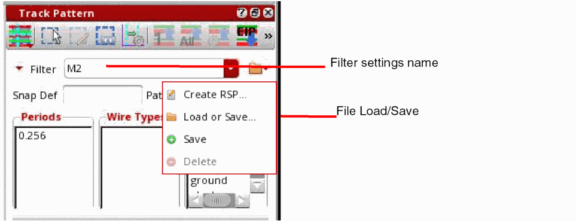
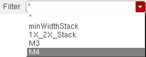
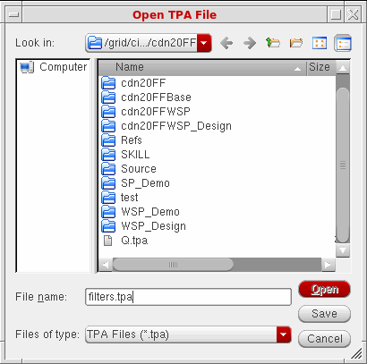

Saving and Restoring Filter Settings
Filter settings in Track Pattern assistant can be saved and restored from the memory or a file. This also saves in-design RSPs to a file that can be loaded in another cellview.

To save the current filter settings in memory:
- Type the name for the current filter settings in the Filter field.
-
Click Save.
The filter settings are saved to the assigned name, which is added to the list of settings in the Filter drop-down list.
To restore the saved filter settings from memory:
-
Select the filter settings name from the Filter drop-down list.
The filter settings are restored.Related snap pattern group names are also shown in the drop-down list and can be selected to filter the patterns in the Track Pattern table, as described in Filtering by Related Snap Patterns.
To delete filter settings from memory:
To store all the saved filter settings to a file:
-
Click the Load or Save option from the
drop-down list in the Track Pattern assistant.
The Open TPA File form appears.
 -
Enter the filename.
The filename must have a.tpaextension, otherwise the Save button will not be active. -
Choose Save.
All the filter settings that are saved in memory will be stored in the specified TPA file.
To load filter settings from a TPA file:
-
Click the Browse button (…) in Track Pattern assistant.
The Open TPA File form appears. - Enter the filename or browse through the hierarchy for the file to load.
-
Click Open.
All the filter settings in the specified TPA file will be available in the Filter drop-down list of Track Pattern assistant.
Related Topics
Launching the Track Pattern Assistant
Track Pattern Assistant Toolbar
Return to top